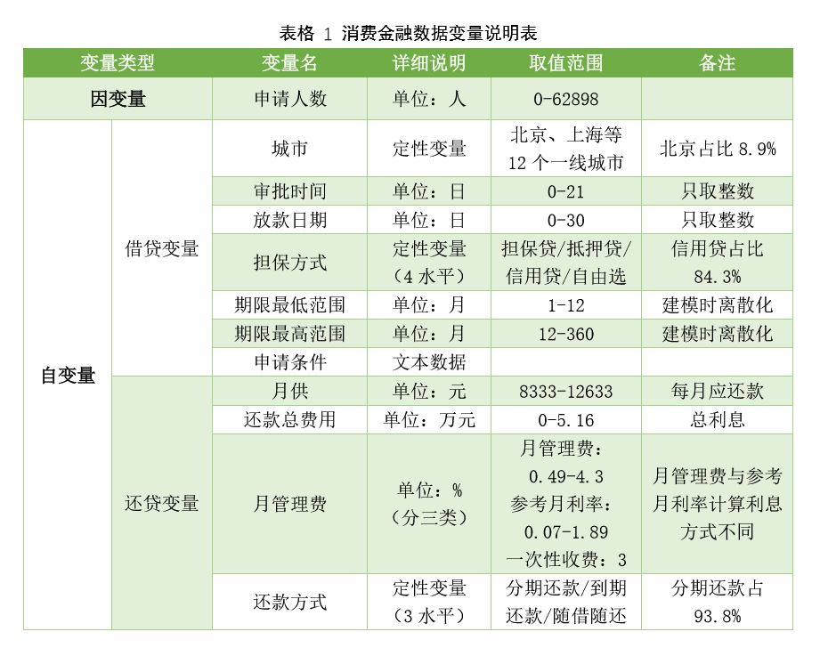

第 4 章 TASK 2 数据说明
4.1 学习资料
由于现在的数据集都比较大，变量很多，因此，在做数据分析报告的时候，有必要形成一个数据变景说明表，让读者能够一目了然地了解数据情况。一个规范的数据变量说明表应该包含以下几部分内容。
（1）要有表格标题。一般在表的上方，报告中的表格要有标号。
（2）要标注表头。变量说明表的表头不宜过多，一般包括变量类型、变量名称、取值范围、单位、详细信息、备注等。可以灵活调整，并且无须太详尽，给出总括即可。
（3）变量的归纳分组。中文报告尽量以中文命名。如果有因变量和自变量，需要标明。自变量的展示要根据内容进行归纳分组。
（4）备注说明。数据变量说明表也可以发挥描述分析的作用，为后面的统计分析分担一部分工作。
4.2 数据概览
library(readxl)
task_3_data <- read_excel("task_3_data.xlsx") #读入数据
summary(task_3_data) #变量概览## 公司名称 城市
## Length:1046 Length:1046
## Class :character Class :character
## Mode :character Mode :character
##
##
##
##
## 贷款金额 期限 月供
## Length:1046 Length:1046 Min. : 8333
## Class :character Class :character 1st Qu.: 9333
## Mode :character Mode :character Median :10133
## Mean : 9984
## 3rd Qu.:10633
## Max. :12633
##
## 还款总费用 月管理费 期限最低范围
## Min. :0.00 Length:1046 Min. : 1.00
## 1st Qu.:1.22 Class :character 1st Qu.: 3.00
## Median :2.16 Mode :character Median :12.00
## Mean :1.99 Mean : 8.36
## 3rd Qu.:2.76 3rd Qu.:12.00
## Max. :5.16 Max. :12.00
##
## 期限最高范围 还款方式 放款日期
## Min. : 12.0 Length:1046 Length:1046
## 1st Qu.: 36.0 Class :character Class :character
## Median : 36.0 Mode :character Mode :character
## Mean : 36.7
## 3rd Qu.: 36.0
## Max. :360.0
##
## 审批时间 担保方式 申请人数
## Min. : 0 Length:1046 Min. : 0
## 1st Qu.: 1 Class :character 1st Qu.: 0
## Median : 2 Mode :character Median : 33
## Mean : 2 Mean : 1201
## 3rd Qu.: 2 3rd Qu.: 462
## Max. :21 Max. :62898
## NA's :2
## 申请条件
## Length:1046
## Class :character
## Mode :character
##
##
##
## 4.3 Good Work
老师给出的优秀范例，供参考。
消费金融是指消费金融公司向各阶层消费者提供消费贷款的现代金融服务方式，而消费金融公司是指以小额、分散为原则，为中国境内居民个人提供以消费为目的的贷款的非银行金融机构。在中国当前的经济环境下，传统银行难以全面发展个人信贷业务，而建立消费金融体系可以有效提升居民的消费水平，支持经济增长。
本课题数据为1046家消费金融公司所发放的，贷款金额为10万元、还款期限为12月的消费贷款明细。数据包含12个变量，分为因变量和自变量两大类。因变量为贷款申请人数，表征该公司贷款的收益与受众规模。自变量分为借贷变量与还贷变量两部分。借贷变量由城市等7个变量组成，其中审批时间是指贷款申请提交到审批通过所需要的工作日，放款日期是指从审批通过到发放贷款所需要的工作日，申请条件山各消费金融公司自行制定，主要关注贷款人的基本信息与资产状况。还贷变量包括月供在内的四个变量，其中还款总费用表示12个月还款结束时贷款人所应还的利息总和。月管理费变量由三种类型和它们各自的取值组成，分别为月管理费、参考月利率和一次性收费，分别表示三种利息计算方式：月管理费是指每个月收取贷款金额的一定比例的费用，月利率指每个月收取当前贷款余额的一定比例的费用，一次性收费是指在贷款时一次性缴纳总利息，在之后的月供中不再需要缴纳利息。具体变量见消费金融数据说明表（表格1）。

黄筝 中国人民大学